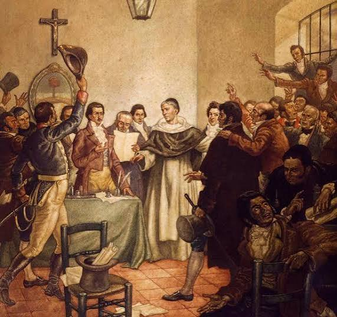
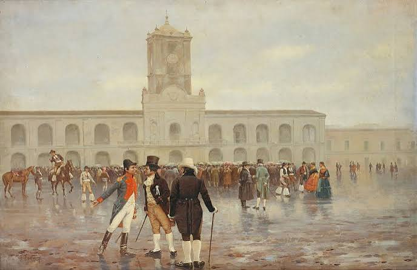

A história da Argentina
A história da Argentina é marcada por diferentes povos, pela colonização espanhola e pela luta pela independência. Ao longo dos séculos, o país passou por importantes transformações políticas, sociais e culturais que contribuíram para a formação de sua identidade.
A colonização espanhola
Durante o século XVI, os espanhóis chegaram ao território argentino e iniciaram a colonização. A região passou a fazer parte dos territórios controlados pela Espanha na América do Sul.
A independência

Em 9 de julho de 1816, representantes das Províncias Unidas do Rio da Prata declararam a independência durante o Congresso de Tucumán. Esse foi um marco na formação do país.
A formação do país

Após a independência, ocorreram conflitos políticos sobre a organização do governo. Em 1853, foi aprovada a Constituição Nacional, importante para a organização da Argentina.